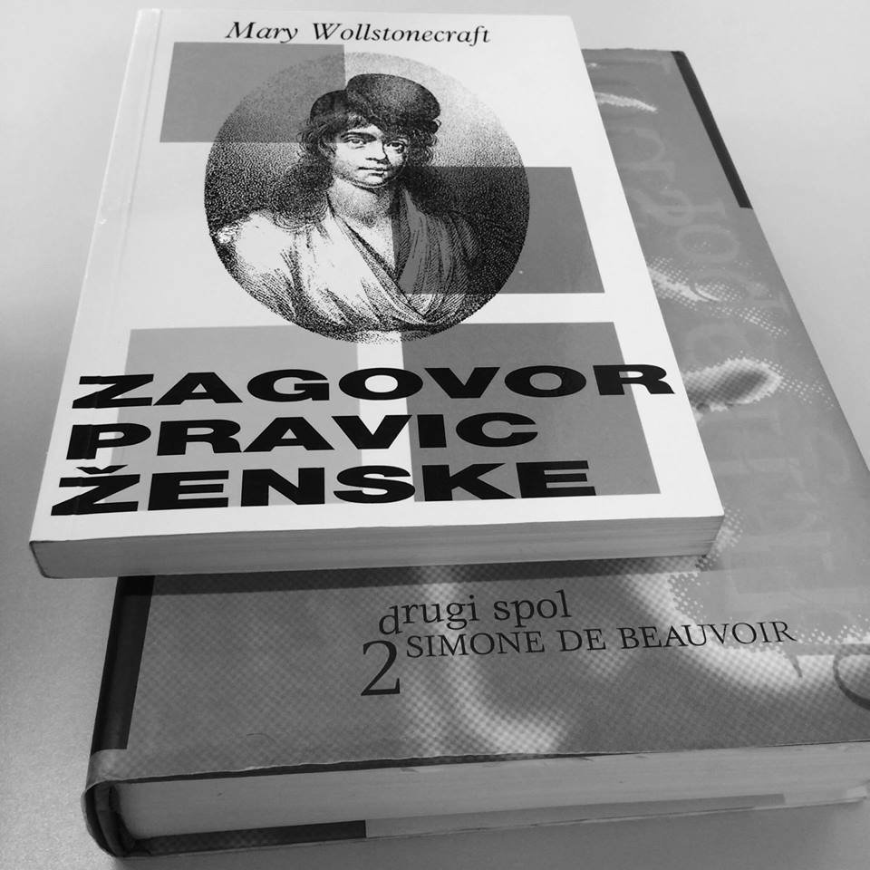

Pri pisanju naše projektne naloge smo uporabile več različnih metod dela. Začele smo s preučevanjem literature domačih in tujih avtorjev, virov in člankov o položaju žensk in o feminizmu ter si po pregledu postavile hipoteze. V empiričnem delu je bila izvedena anketa, ki so jo sestavljala predvsem vprašanja zaprtega tipa.
